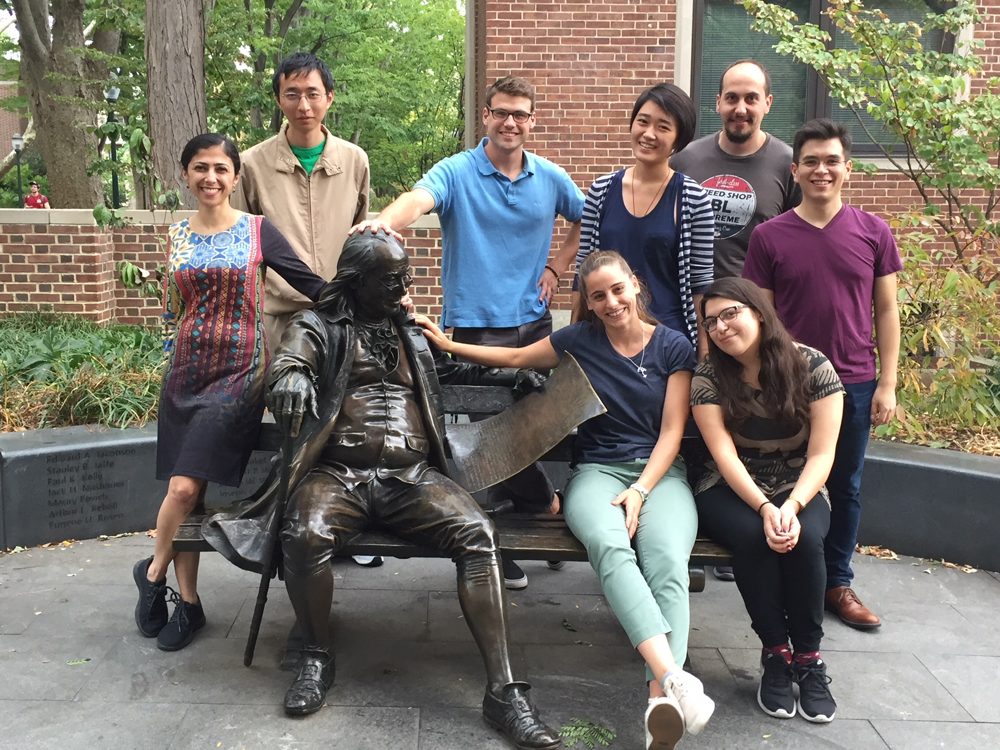
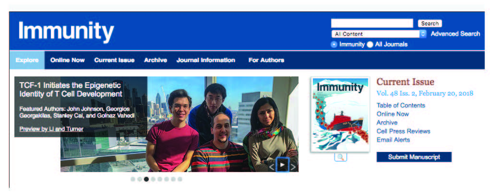

Home
|  |

Welcome
The Vahedi laboratory is part of the Department of Genetics, Perelman School of Medicine, at the University of Pennsylvania. We are also members of the Institute for Immunology and Epigenetics Institute. Our laboratory is multidisciplinary, integrating computational and experimental approaches to develop a single to collective cell understanding of gene regulation in immune cells.
What is our goal?
The overarching goal of our hybrid wet and dry laboratory is to exploit changes in the epigenome in addition to mouse and human genetics to further our understanding of gene regulation in T cells in health and disease.
Why epigenomics?
Information encoded in DNA is interpreted, modified, and propagated as chromatin. The diversity of inputs encountered by immune cells demands a matching capacity for transcriptional outcomes provided by the combinatorial and dynamic nature of epigenetic processes. Advances in genome editing and genome-wide analyses have revealed unprecedented complexity of chromatin pathways involved in the immune response, offering explanations to long-standing questions and presenting new challenges.
How do we do research?
We blend epigenomics, human and mouse genetics, immunology, and computational biology to pursue a new understanding of gene regulation in the immune system. We generate genome-wide maps of chromatin in T lymphocytes. We are interested in regulators of T cell development and also T cell engagement in autoimmune disorders such as psoriasis and type 1 diabetes. We use bulk assays such as ChIP-seq, HiChIP, ATAC-seq, and RNA-seq in addition to cutting-edge single-cell assays such as single-cell (sc)ATAC-seq and scRNA-seq. We take advantage of natural genetic variation as an in vivo mutagenesis screen to assess the genome-wide effects of sequence variation on transcription factor binding, epigenomics and transcriptional outcomes in primary T cells. As a result of our computational expertise, we also harvest the vast troves of big data that immunologists and other researchers are pouring into public repositories. Our data integrations rely on available computational pipelines. Furthermore, we develop novel computational techniques to fully understand the complexity of multidimensional epigenomics datasets in T cells.
Rotation Projects 2017-2018.
This article very nicely summarizes our lab's philosophy and the kind of rotation projects available for students.
1) Deciphering the 3D genome reorganization during T cell development and after immune activation. Computational and experimental.
2) Delineating transcription factors with key roles in the 3D genomic organization of T cells. Computational and experimental.
3) Exploiting natural genetic variations in multiple mouse strains to decipher transcription factor grammar in T cell development. Computational and experimental.
4) T cell fate and clonality inference from single-cell transcriptomes. Computational and experimental.
5) Novel tools to analyze single-cell chromatin accessibility maps (scATAC-seq). Computational.
6) Novel tools to decipher transcription factor grammar from sequence and epigenomics data using machine learning. Computational.
7) Epigenomic mapping of psoriasis. Computational and experimental.
8) Epigenomic mapping of type 1 diabetes. Computational and experimental.
9) Discovery and validation of transcription factors shaping chromatin accessibility landscapes in immune cells. Computational and experimental.
Research Highlights
The lab's first publication caused triple threat: it ended up on the cover of the February issue of Immunity, received a News and Views, and put us (John, George, Stanley, Golnaz, and Philly's skyline) on the rotating image slider on the homepage of the journal. Do you like to join our team? We currently have an open postdoctoral position.
|  |
Trainees are welcome to join our weekly computational journal club on Fridays at 4pm (301 BRB).